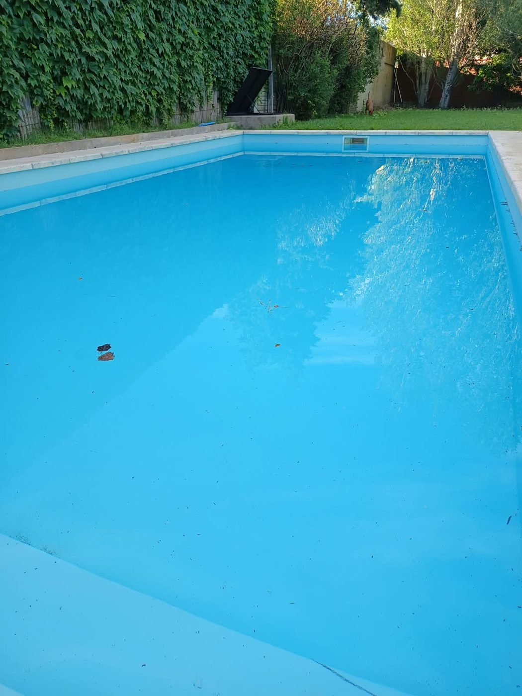
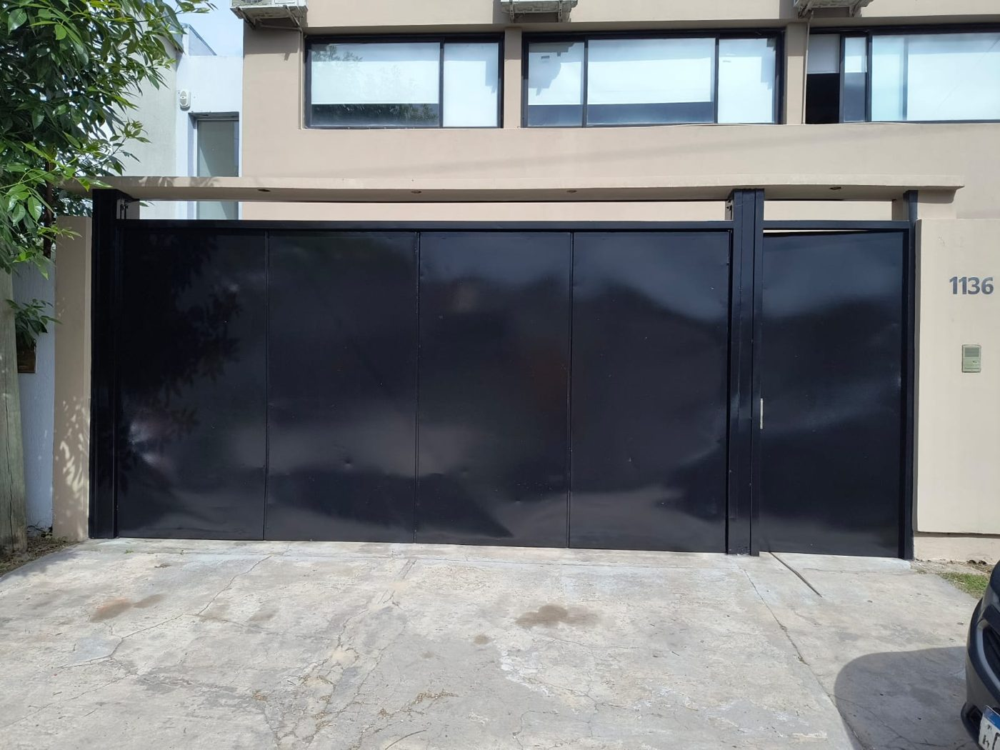
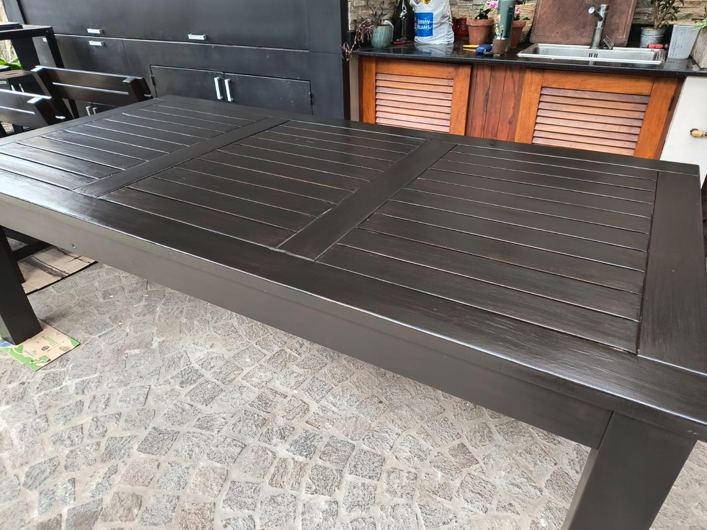

Identidad para redes: opciones de logo, piezas para Instagram, Facebook y WhatsApp. ¿Qué logo te gusta más, A, B o C? Ver la web →
Solo el nombre, en la misma letra de la web. Sobrio y elegante. En el círculo chico el texto se achica bastante.
Las iniciales en un sello. Se lee perfecto en el círculo de perfil, incluso chiquito, y funciona como firma sobre las fotos.
Una gota: tinta ("ink") y pintura, y también agua de piscina. El símbolo solo se reconoce rápido en el perfil.
Piscinas · Losas y Terrazas · Pintura · Aberturas · Mobiliario Prolijidad, puntualidad y entrega a tiempo Presupuesto sin cargo ↓
Renovación de piscinas, losas y terrazas, pintura, aberturas y mobiliario. Trabajo profesional, prolijo y entregado en el tiempo acordado. Presupuesto sin cargo.
Soy Carlos Martin Rassio. Mis años de experiencia garantizan un trabajo profesional: prolijidad, puntualidad y entrega en el tiempo acordado. Trabajo en Merlo y Los Molles (San Luis) y en La Plata y alrededores (Provincia de Buenos Aires).
Piscinas, losas y terrazas, pintura, aberturas y mobiliario. Trabajo prolijo, puntual y entregado en el tiempo acordado. Presupuesto sin cargo.
¡Hola! Gracias por escribir a RASSIO INK. Contame qué trabajo necesitás y mandame 2 o 3 fotos del lugar. Te paso un presupuesto sin cargo.
¡Gracias por tu mensaje! Ahora no puedo responder, pero te contesto a la brevedad.
Para pasarte el presupuesto necesito: fotos del lugar, medidas aproximadas y la zona. ¡Gracias!



Mandame 2 o 3 fotos de lo que necesitás por WhatsApp y te paso el presupuesto.